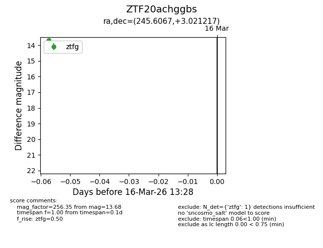
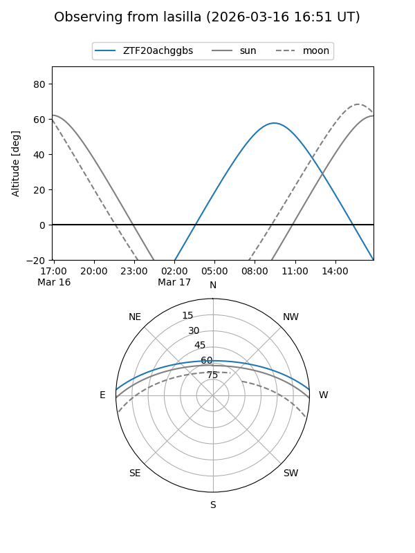
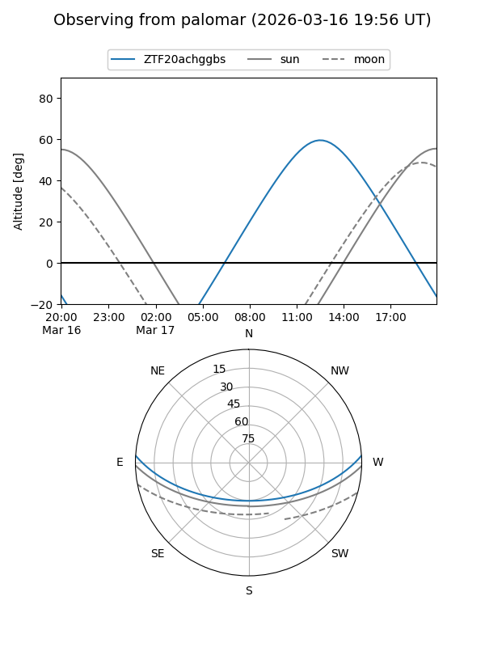

ZTF20achggbs
Target ZTF20achggbs at 2026-03-16 13:30
Aliases and brokers:
FINK: link
Lasair: link
ALeRCE: link
alt names
ZTF20achggbs (ztf,fink_ztf)
Coordinates:
equatorial (ra, dec) = 245.6067,+3.02122
equatorial (HMS+DMS) = 16:22:25.60,+03:01:16.38
galactic (l, b) = (16.8782,+34.19585)
Flags:
Photometry:
last ztfg=13.68
1 ztfg detections
Lightcurve

Visibility


Additional plots